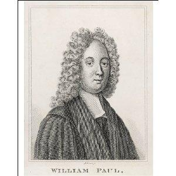
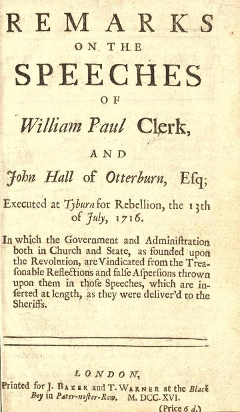

Mr Paul
Monsieur Paul
Lament on William Paul, vicar of Orton-on-the Hill (Leicestershire), executed on 13th July 1716
Elégie de William Paul, curé d'Orton-on-the Hill (Leicestershire), exécuté le 13 juillet 1716.
From a MS in the DOUCE Collection, part of the Rawlison MSS in the Bodleian Library.
Tirée de la collection de manuscrits DOUCE, issue du recueil Rawlison de la Bibliothèque Bodléienne (Université d'Oxford)
Tune - Mélodie
No tune known. Replaced here by "Chevy Chase
from Thomas d'Urfey's "Pills to purge Melancholy" (see God prosper our King )
Sequenced by Lesley Nelson (see Links)
|
To the Lyrics
Repression after the 1715 Rising : "Though ... the great majority [of the Scots Jacobite élite] were shielded, interceded for,...and eventually found their way home, for the most part legally, like Laurence Oliphant of Gask ,... the case was very different in England , where the government... decided to ...punish the northern English Catholic community for its involvement in the rising, and ... to deter future potential rebels. Some forty executions of Jacobites captured at Preston accordingly followed, including Derwentwater , Kenmure , and the Rev. William Paul. Paul's fellow-chaplain Robert Patten avoided Paul's fate by turning king's evidence. Others, like William Maxwell , fifth earl of Nithsdale, George Seton , fifth earl of Winton, Charles Wogan, Thomas Forster , and McIntosh of Borlum possibly avoided execution by escaping from prison. A further 600 or so more humble Jacobite prisoners were transported to the American colonies and approximately another 600 either died in prison or were released when an indemnity act, passed in 1717, came into force." Source: Oxford Dictionary of National Biography |
A propos du texte
Répression après le soulèvement de 1715 : "Bien que...la grande majorité [de l'élite Jacobite écossaise] ait bénéficié de protections, d'intercessions...et soit rentrée finalement chez elle, sans être inquiétée, comme Laurence Oliphant of Gask ,...il n'y en alla pas de même en Angleterre , où le pouvoir...décida... de faire payer aux catholiques du nord leur implication dans la rébellion, ...pour décourager les récidivistes potentiels. Près de quarante exécutions de Jacobites pris à Preston furent donc ordonnées, dont celles de Derwentwater , Kenmure et du pasteur William Paul. Le collègue de ce dernier Robert Patten n'échappa à ce sort qu'en devenant témoin à charge dans les procès. D'autres, tels que William Maxwell , 5ème Comte de Nithsdale, George Seton , 5ème comte de Winton, Charles Wogan, Thomas Forster , et McKintosh of Borlum purent échapper à la mort en s'évadant de prison. 600 autres prisonniers Jacobites de bien plus modeste origine furent déportés dans les colonies d'Amérique et environ 600 autres moururent en prison ou furent relâchés en application de l'acte d'amnistie de 1717." Source: Oxford Dictionary of National Biography |

|
POEM ON MR. PAUL [1}
1. The Man that fell by Faction's Strife, In Mournful Notes I Sing ; Who bravely Sacrific'd his Life, To serve his Church and King. [2] 2. A Subject, Priest, and Patriot he, For Church, King, Country brave; Chose rather thus to Murder'd be, Than see their Rights Enslav'd. 3. He strove for their Invaded State, From Brunswick's curst Arrival; Who proves their Emblem of ill Fate, In Noll's and Will's Revival. [3] 4. Behold I touch the Mournful Lyre, Whose gentle Strings Impart, (As first my Grief did them inspire) Their Trembling to my Heart. 5. My Muse, all wreath'd in baleful Yew, [4] No laurel Green shall wear; Thus is England's falling Church to me, Whilst Whiggs the Triumph bear. 6. Townshend and Wake that drew him in, His Errors to recall; Now like malicious Serpents, grin, And Triumph in his Fall. [5] 7. Deceit may Townshend's Nature be; In Wake, 'tis Gain's Creation, 'Cause, like the Crown, his Holy See, Is but an Usurpation. [6] 8. Tho' Paul in Fear did thus Recant, Having his King deny'd; Like Peter, he return'd the Saint, And an Apostle Dy'd. 9. And tho' Abjuring Oaths he took, [7] To our Usurping Tarter; Like Saul the Cause he thus forsook, To be like Paul the Martyr. 10. His Dying Words with Truth did Shine; Himself, he did desire, Should be his Monumental Shrine, On every Church's Spire. [8] 11. From thence, tho' Dead, he'd still relate, For Faith his Life Surrender; By Mercy of its Guardian State, And Merciful Defender. 12. And if the Sun had chanc'd to taint, And chang'd him Black to view; Still their dark Deeds he'd Represent, In Ecclesiastick Hue. [9] 13. His Arch the Skies had then become, Stars deckt him with their Train, And Air had been his Sacred Tomb, Embalm'd in Tears of Rain. 14. His Death, as we a Glory own, Whiggs love to Church is reckon'd; Whilst he shall by the Style be known, Of Great St.Paul his Second. [10] Source: C.H. Firth in "Scottish Historical Review", 1911, page 254. |
  REMARQUES sur les DISCOURS de William Paul, Prêtre et de John Hall d'Otterburn, Exécutés à Tyburn pour rébellion, le 13 juillet 1716 par lesquelles le gouvernement et l'administration de l'Eglise et de l'Etat, institués par la Révolution, sont justifiés contre les ignobles attaques et calomnies proférées contre eux dans lesdits discours, lesquels sont repris in extenso et tels qu'ils ont été transmis aux fonctionnaires de l'ordre public. ********************* LONDRES Imprimé pour le compte de J.Baker et T.Warner au "Black-Boy" dans "Paster-Noster-Row", 1716, Prix: 12 pence. |
LE PASTEUR PAUL [1]
1. Ce chant de deuil, il est pour toi, Victime des factions, Qui mourus bravement pour ton Roi Et pour ta Religion. [2] 2. Clerc, sujet, patriote aussi, Tu préféras la mort, Quand à ta Foi, ton Roi, ton pays Tu vis qu'on portait tort. 3. Tu luttas contre l'invasion Par Brunswick de l'Etat. Il rappelait en malédiction Noll et Will à la fois. [3] 4. Plaintive lyre, sous mes doigts Que tes cordes, vibrant, Expriment le douloureux émoi Dont mon cœur est tremblant! 5. Ma Muse, que ton front soit ceint D'if et non de laurier: [4] Eglise Anglicane, c'est la fin: Les Whigs vont triompher. 6. Wake et Townshend l'ont amené A confesser ses torts. Ricanant tels des serpents mauvais, De sa chute et sa mort. [5] 7. Townshend est né fourbe. Wake a Subi l'attraît du gain: Sa mitre est usurpée comme la Couronne de certain. [6] 8. Il meurt, bien qu'ayant abjuré Par peur, renié son Roi, Tel Pierre, en odeur de sainteté, Apôtre de la Foi. 9. Et s'il a prêté des serments [7] A l'usurpateur, Saul, Bourreau de la Cause, est à présent Son glorieux martyr Paul. 10. Et ses derniers mots disent vrai: C'est son désir réel Qu'entre nos temples soient partagés Tous ses restes mortels. [8] 11. Ainsi témoignant aux vivants Qu'il est mort pour la Foi, Dont il fut rempart et intendant: Tel était son état. 12. S'il parut, un temps, à nos yeux, Dans une tenue noire, Il revêt pour dénoncer des gueux, Ses beaux habits de gloire. [9] 13. Ombre en l'arche des cieux enfouie, Les astres pour parure, L'air embaumant de larmes de pluie T'offre une sépulture. 14. Tenons pour glorieuse sa mort, Les Whigs pour des impies! Ce sont les traces du grand Saint Paul Que ce prêtre a suivies. [10] (Trad. Christian Souchon (c) 2011) |
|
[1]
"The Reverend William Paul, Vicar of Orton-on-the-Hill, Leicestershire
,
joined the rebels at Preston in the year 1715, and read prayers to them as
their chaplain. He made his escape to London when the rebels were defeated, but was taken in disguise, and convicted of high treason at his trial
in Westminster Hall. On the 13th of July, 1716, he was conveyed on a sledge from Newgate to
Tyburn
, where he was hung, drawn, and quartered..."
Source: Rugby School Register, Boys educated at Rugby School, Entrances in 1696, Second edition, 1838 [2] Parson William Paul and another Jacobite, John Hall of Otterburn, executed on the same day, read speeches for which the Government and the Church published and circulated the long refutation titled "Remarks" summed up below. The origin of this custom is as follows: Queen Mary I of England (Bloody Mary) is remembered for restoring England to Catholicism between 1555 and 1558 and had 300 dissenters burnt at the stake in the "Marian Persecutions", thus exacerbating anti-Catholic feelings among the English people. Following the commemoration of Protestant victims of the Marian persecutions in the theologian John Foxe’s "Book of Martyrs" (1563), the right of the condemned to speak before their execution (which had been denied to these “martyrs”) was celebrated in English society. The spiritual state of those facing death was widely believed to possess a special truth, even when their misdeeds merited death, and the public wanted to know about their words and actions as they approached death. The right to make a “last dying speech” was publicised at the executions for treason in the 1660s and 1670s, and taken up by those convicted of ordinary crimes. These speeches were often published as short pamphlets or broadsheets, often including accounts of the behaviour of the condemned at their execution. These speeches arguably served to legitimate the criminal justice system to the spectators, since the speakers typically accepted the legitimacy of their conviction and sentence of death. But convicts [as Parson Paul, in the present case] did not always follow the expected conventions and claimed they were innocent of the crime of which they had been convicted, and others complained of injustices in the way their case had been handled. In these ways at least some convicts were able to make their own voices heard. (See also Tyburn ). source: "The Proceedings of the Old Bailey 1674 to 1913 [3] Noll and Will : Oliver Cromwell and William of Orange. [4] Baleful yew, laurel green : Laurel symbolizes triumph, whereas yew is a sign of bereavement. [5] Townshend and Wake : see The Turnip , note 7. William Wake was Archbishop of Canterbury, the principal leader of the Church of England, from 1715 to 1737. Parson Paul put in three pleas for clemency, two of which were addressed to Wake and one to Townshend. The inference from the present song, corroborated by par. 2 of the "Speech" ("persuasion of several who pretended to be my friends"), is that Paul was prompted to write these letters by their addressees who had them attached to the "Remarks" summed up below, as a "proof" of his "duplicity". [6] "Greedy Wake's usurped see" : William Wake (1673 - 1737) was born to a royalist family. He studied at Christ Church from 1673 and proceeded MA on 29 June 1679. He was ordained priest in 1682 by Fell, the former Dean of the House and Bishop of Oxford, under whose recommendation, Wake was taken by Richard Graham, Viscount Preston, as chaplain for his Embassy in Paris from June 1682 until September 1685. In 1688, Wake married a rich descendant of the brother of a former Archbishop of Canterbury. In 1695 Wake was appointed rector of St James's, Westminster; in 1701 he became Dean of Exeter, and in 1705 Bishop of Lincoln. In 1716 Wake ascended to the Archbishopric of Canterbury. After some years of active involvement in the political and religious life of the time, his health, always fragile, deteriorated. He died at Lambeth Palace on the 24th of January 1737. Source: Christ Church Library, Catalogue of the Wake Collection [7] Abjuring oaths : see "Speech" below, paragraph 2, and "Let our Great James" , note 2. [8] His monumental shrine : see "Speech", par. 8 and the cynical response in the "Remark", N°8. [9] Ecclesiastic hue : see "Speech", par. 3 and the corresponding "Remark". As stated in the "Rugby School Register" "Paul went to the place of execution in the canonical habit of the Church of England, a circumstance which strongly excited the feelings of the spectators in his favour." [10] Saint Paul's second A similarity in names paralleled with similar conversions mentioned in verse 9 (Saul of Tarsus on his way to Damascus). |
[1]
Le Pasteur William Paul, curé d'Orton-on-the-Hill, Leicestershire
se rallia aux rebelles à Preston en 1715 et devint leur prédicateur et leur aumônier. Il s'enfuit à Londres après la défaite, où il fut arrêté, bien qu'il fût déguisé. Il fut reconnu coupable de haute trahison à l'issue de son procès à Westminster Hall. Le 13 juillet 1716, il fut transporté dans un traineau de la prison de Newgate au gibet de
Tyburn
où il fut pendu, écartelé et dépecé..."
Source: Registres de l'Ecole de Rugby, Registre des élèves entrés en 1696, Seconde édition, 1838 [2] Le pasteur William Paul et un autre Jacobite, John Hall d'Otterburn, exécuté le même jour, lurent des discours , que la Couronne et l'Eglise réfutèrent dans des "Remarques" diffusées largement. On en trouvera un résumé ci-après. L'origine de cette coutume est la suivante : On sait que la Reine Marie Tudor (Bloody Mary) essaya de réintroduire le catholicisme en Angleterre entre 1555 et 1558 et condamna au bûcher 300 réfractaires au cours des "Persécutions mariannes" qui exacerbèrent les sentiments anticatholiques des Anglais. Faisant suite à l'hommage rendu aux victimes par le théologien John Foxe dans son "Livre des Martyrs" (1563), le droit du condamné de s'exprimer avant son exécution (qui avait été refusé à ces “martyrs”) fut réclamé par l'opinion anglaise. Les dispositions d'esprit de ceux qui faisaient face à la mort étaient généralement regardées comme l'expression de la pure vérité, même si les malfaiteurs méritaient la mort et le public voulait tout savoir de leurs dires et de leurs gestes juste avant l'exécution. Le droit de prononcer un dernier discours mortuaire“ fut rendu public lors des exécutions pour haute trahison des années 1660 et 1670, puis étendu aux condamnés de droit commun. Ces discours furent souvent publiés sous forme de cours tracts dénommés "broadsheets", où l'on trouvait souvent un compte rendu de l'exécution. On assurait que ces discours légitimaient les procédures criminelles, dès lors que les orateurs reconnaissaient en règle générale qu'ils avaient été condamnés à juste titre. Mais certains suppliciés [comme le Pasteur Paul, en l'occurrence] ne jouaient pas toujours le jeu et proclamaient qu'ils étaient innocents du crime pour lequel ils avaient été condamnés , tandis que d'autres se plaignaient d'injustice dans la manière dont la procédure s'était déroulée. De cette façon au moins, certains condamnés ont pu faire entendre leur voix. (Cf. aussi Tyburn ). source: "Les procédures de "Old Bailey" de 1674 à 1913 [3] Noll et Will : Olivier Cromwell et Guillaume d'Orange. [4] If et laurier : la laurier symbolise le triomphe, l'if le deuil. [5] Townshend et Wake : cf. Le navet , note 7. William Wake fut archevêque de Cantorbéry, le chef suprême de l'Eglise anglicane de 1715 à 1737. Le pasteur Paul rédigea trois recours en grâce, dont deux furent adressés à Wake et un à Townshend. Le présent chant suggère, comme le fait le "Discours" au par. 2 ("la persuasion de gens qui se disaient mes amis") que ce fut sur l'initiative des destinataires, lesquels les firent annexer aux "remarques en réponse" comme "preuves" de la "duplicité" du prêtre. [6] L'archevêché usurpé par Wake le cupide : William Wake (1673 - 1737) est issu d'une famille royaliste. Il entra à la faculté de théologie d'Oxford en 1673 et en sorti "Master of Arts" en juin 1679. Il fut ordonné prêtre en 1682 par Fell, l'ancien doyen, devenu évêque d'Oxford, lequel le recommanda à Richard Graham, vicomte Preston, Ambassadeur à Paris, qui le prit avec lui comme chapelain de juin 1682 à septembre 1685. En 1688, il épousa une riche descendante du frère d'un ancien archevêque de Cantorbéry. En 1695 il fut nommé recteur de l'église St. James, Westminster; en 1701, Doyen d'Exeter et en 1701, évêque de Lincoln. En 1716 Wake fut élevé au rang d'archevêque de Cantorbéry. Après quelques années d'activisme politique et religieux, sa santé, qui fut toujours fragile, se détériora. Il mourut au Palais de Lambeth, le 24 janvier 1737. Source: Bibliothèque de la Christ Church (Oxford), Catalogue de la Collection Wake [7] Serments à l'usurpateur : cf; "Discours" ci-après, par. 2. et "Pour que Jacques recouvre" , note 2. [8] Tous ses restes mortels : cf. "Discours", par. 8 et la cynique "Remarque en réponse, N°8. [9] Habits de gloire : voir "Discours, par. 3 et "Remarque" correspondante. Comme indiqué dans l'"Annuaire des anciens de l'Ecole de Rugby", "Paul se rendit sur les lieux de son supplice en habit de prêtre de l'Eglise anglicane, ce qui lui valut la compassion des spectateurs." [10] Les traces de Saint Paul : La similarité des noms se double d'une similarité de comportements évoquée au couplet 9 (la conversion de Saul sur le chemin de Damas). |
|
|
|
Parson Paul's Speech |
Remarks to the Speech |
|
INTRODUCTION
Comparing this speech with the papers left by Lord Derwentwater, Colonel Oxburgh , and the other Rebels lately executed, must convince that, instead of being their own speeches, they are forgeries composed by others in order to make those men pass for glorious martyrs and spirit up their confederates to a new rebellion. |
|
| 1° Good People, I am just going to make my appearance in the other World, where I must give an account of all the actions of my past life and though I have endeavoured to make my peace with God, by sincerely repenting of all my sins , yet forasmuch as several of them are of a public nature, I take it to be my duty to declare here, in the face of the World, my hearty abhorrence and detestation of them. | 1° A Protestant priest who expresses repentance of his sins without invoking the merits of Jesus Christ clearly adheres to the Popish doctrine that penance is a sufficient atonement for sin. |
|
2° And first, I ask pardon of God and the King, for having violated my loyalty, by
taking most abominable oaths in
defence of usurpation
against my lawful Sovereign, King
James the Third.
And I ask Pardon of all persons whom I have injured or offended, so I do especially desire forgiveness of all those whom I have scandalized by pleading guilty . I am sensible that it is a base and dishonourable action; that it is inconsistent with my duty to the King; and an entire surrender of my loyalty. Human frailty, and too great a desire of life, together with the persuasions of several who pretended to be my friends , were the occasion of it. I trust God of His infinite mercy, upon my sincere repentance, has forgiven me, and I hope all good Christians will. |
2° Paul forgets to mention among his "public sins" that
he continued his treachery till the rebellion broke out
.
He has certainly delivered the annual sermon on the 5th of November, the anniversary of the Gunpowder Plot and thanked God for dethroning James II and bringing over the Prince of Orange. A sincere penitent would not have overlooked such prevarication with God and Man. [see
The Fifth of November
, note 1]
"Begging pardon of those he scandalized by pleading guilty" is a form which all the ghostwriters of the rebels have put into their mouths . |
| 3° You, see, my countrymen, by my habit , that i die a son, though a very unworthy one, of the Church of England: but I would not have you think that I am a member of the schismatic Church, whose bishops set themselves up in opposition to those orthodox fathers, who were unlawfully and invalidly deprived by the Prince of Orange. I declare that I renounce that communion and that I die a dutiful and faithful Member of the Nonjuring Church ; which has kept herself free from Rebellion and schism, and has preferred and maintained true orthodox principles, both as to Church and State. And I desire the Clergy , and all Members of the Revolution-Church, to consider what bottom they stand upon when their succession is grounded upon an unlawful and invalid deprivation of Catholic Bishops; the only foundation of which deprivation, is a pretended Act of Parliament. |
3° If Paul, in spite of the proverb that
"Cowl doesn't make a monk"
, went to Tyburn in his priest's vestments, his design was to incense the mob against the government in suggesting that they are hanging up the Church. Maybe he wants his vestments to become relics adored by bigots like the clothes of
Guy Fawkes and Henry Garnet
.
Parson Paul's friends used to consider that since the bishops set to replace those deprived by Orange are all dead, the schism ceased with them. On the other hand, the Statute made by King Edward III specifies that the Prelacy is founded by the King and Nobles. Those founders may deprive such prelates as refuse to swear allegiance to them. Paul did not die a member, but he lived a priest of what he calls the "Schismatic" Church, till he joined the rebellion. |
|
4° Having asked forgiveness for myself, I come now to
forgive others. I pardon those, who under the notion of
friendship
persuaded me to plead guilty
. I heartily forgive all my most inveterate enemies especially the Elector of Hanover, my Lord Townshend, and all others who have been instrumental in promoting my death. "Father, forgive them! Lord Jesus, have mercy upon them, and lay not this sin to their charge."
|
4° Those who advised him to plead guilty were his best friends , judging by the clemency extended to others who did so. But his case and character were unworthy of such favour. Calling the King and Lord Townshend "his most inveterate enemies" is not reconcilable with the spirit of Christianity. It marks them out to the fury of the Jacobites, a piece of revenge execrable in a dying minister. |
|
5° The next thing I have to do, Christian friends, is to exhort you all to return to your duty. Remember that King
James the Third is your only rightful sovereign
, by the
laws of the land, and the constitution of the Kingdom.
And therefore if you would perform the duty of justice to
him, which is due to all mankind, you are obliged in conscience to do all you can to restore him to his crown: for it is his right, and no man in the world besides himself can lawfully claim a title to it.
And as it is your duty to serve him, so it is your interest ; for till he is restored, the Nation can never be happy. You see what miseries and calamities have befallen these Kingdoms by the Revolution and I believe you are now convinced, by woeful experience that swerving from God's laws, and thereby putting yourselves out of His protection, is not the way to secure you from those evils and misfortunes which you are afraid of in this World. Before the Revolution, you thought your religion, liberties, and properties in danger; and I pray you to confider how you have preserved them by rebelling. Are they not ten times more precarious than ever? Who can say he is certain of his life or estate, when he considers the proceedings of the present administration? And as for your religion, is it not evident that the Revolution, instead of keeping out Popery, has let in Atheism? Do not heresies abound every day; and are not the teachers of false doctrines patronized by the great men in the government? This shows the kindness and affection they have for the Church. And to give you another instance of their respect and reverence for it, you are now going to see a priest of the Church of England murdered for doing his duty. For it is not me they strike at so particularly, but it is through me that they would wound the priesthood , bring a disgrace upon the Gown, and a scandal upon my sacred function. But they would do well to remember, that he who despises Christ's Priests, despises Christ; and he who despises him, despises Him that sent him. |
5° Paul now
excites his auditors to a new rebellion
, without offering one law or text to justify the Pretender's claim. He only insists on
the calamities that have befallen the Kingdoms by the Glorious Revolution, without giving one instance of them
. He betakes himself to generals: religion, liberties, properties are presently increasingly in danger. But even the Non-Jurors who opposed James II and applied to Orange in December 1688 were convinced that
they were in danger before the Revolution.
Are they ten times more precarious now than ever? Law obtrudes on army and university. No Papist shall sit on our throne, but all of them shall be of the Communion of the Church of England, a security for our religion as England never had before. So is the Declaration of Rights for liberties and properties . Furthermore, the present ministry does not pack juries or suborn evidence. Copy of their indictment and of the panel is delivered to the defendants at trials who are allowed a counsel that have free access to them. No one can be tried but on the oath of two witnesses. All such privileges as Englishmen never enjoyed before the Revolution. Did the Revolution promote Atheism or Popery? The practice of Mr Paul's party to take oaths to the government on purpose to undermine it and to abjure the Pretender, while, at the same time, they carried on his interests, is accountable for the growth of atheism. Wilful perjury is the greatest proof of atheism. It is hateful to call "murder" a due course of law. Fawkes and Garnet died with similar reflections: these are only words of course from rebels at the gallows. How could the whole priesthood be struck through him? He cannot reckon himself a priest, since he was ordained by a schismatic bishop in 1709! There is no disgrace to the Clergy in just executing a priest for capital crimes : even Papists do hang their priests for rebellion. |
|
6° And now, Beloved, if you have any regard to your
Country, which lies bleeding under these dreadful extremities,
bring the King to his just and undoubted right
. That is the only way to be freed from these misfortunes, and to secure all those rights and privileges which are in danger at present. King James has promised to protect and defend the Church of England; He has given his Royal Word to consent to such laws, which you yourselves shall think necessary to be made for its preservation. And his Majesty is a Prince of that justice, virtue and honour, that you have no manner of reason to doubt the performance of his royal promise. He studies nothing so much as how to make you all easy and happy; and whenever he comes to his kingdom, I doubt not but you will be so.
|
6° Paul continues his rebellious declarations with an encomium of the spurious prince attainted by our laws as an impostor, whose support does not extend, apparently, to the Nonjuring Episcopal Party in Scotland.
He is right in not ascribing to his king a quality, valour, as little applicable to a finished coward, as those of virtue, honour and justice are to one bred up in the idolatry of Rome and the tyrany of France. |
|
7° I shall be heartily glad, good People, if what I have said has any effect upon you, so as to be instrumental in making you perform your duty. It is out of my power now to do anything more to serve the King, than by employing some of the few minutes I have to live in this world, in praying to Almighty God to shower down His blessings spiritual and temporal upon his head, to protect him and restore him, to be favourable to his undertaking, to prosper him here, and to reward him hereafter. I beseech the same infinite Goodness to preserve and defend the Church of England, and to restore it to all its just rights and privileges: and lastly,
I pray God have mercy upon me
, pardon my sins, and receive my soul into his everlasting Kingdom, that with the patriarchs, prophets, apostles and martyrs, I may praise and magnify him for ever and ever. Amen.
|
7° This pitiful rhapsody may by no means be instrumental in making the priest perform what he calls his duty. His prayers will never be granted by God, because they are contrary to His revealed will, nor listened to by Englishmen unless they degenerate into brutes.
It is remarkable that in his whole speech he omits to pray for any one thing through the merits of Christ : as he did not live like a Christian, he did not die one. |
|
8° As to my body, Brethren, I have taken no manner of
care of it : for I value not the barbarous part of the Sentence of being cut down and quartered. When I am once
gone, I shall be out of the reach of my enemies, and
I
wish I had quarters enough to send to every parish in the Kingdom, to testify that a clergyman of the Church of
England was martyred for being Loyal to hit King
.
July 13. 1716. William Paul. |
8° These words are so very extravagant and hypocritical, that it cannot but strike the reader with horror to think of that prevarication in view of God's tribunal.
Since Mr. Paul regrets, that he had not Quarters enough for every parish in the kingdom, to testify that a clergyman of the Church of England (he means his Nonjuring Church) was martyred for being loyal to his King, I shall add no more but a hearty wish, that his incorrigible brethren in rebellion or perjury, be they Clergy or Laymen, may fall by the hands of Justice to supply that defect . |
|
|
|
Discours du Pasteur Paul |
Remarques en réponse au "Discours" |
|
INTRODUCTION
En comparant ce discours avec les écrits laissés par Lord Derwentwater, le Colonel Oxburgh et autres rebelles récemment exécutés, on ne peut qu'être convaincu que loin d'être imputables aux condamnés, ces pièces sont des forgeries composées par d'autres pour les faire passer pour de glorieux martyrs et inciter leurs complices à se rebeller à nouveau. |
|
| 1° Mes amis, sur le point de passer de ce monde à l'autre, où je devrai rendre compte de tous les actes de ma vie passée, je me suis efforcé d'être en paix avec mon Créateur par un repentir sincère de tous mes péchés . Toutefois, comme plusieurs d'entre eux sont de nature publique, il est de mon devoir de déclarer ici à la face du monde, combien je les abhorre et combien ils me répugnent. | 1° Un prêtre protestant qui fait acte de repentance, sans invoquer la grâce de Jésus Christ, adhère de ce fait à la doctrine papiste de la repentance comme condition suffisante au pardon des péchés. |
|
2° Et en premier lieu, je demande pardon à Dieu et au Roi, de m'être montré déloyal en
prêtant d'abominables serments pour la défense de l'usurpation
au détriment de mon souverain légitime, le roi Jacques III.
Puis je demande pardon à toutes les personnes que j'ai blessées et offensées, et en particulier, celles que j'ai scandalisées en plaidant coupable . Je me rends compte que c'est là un acte bas et déshonorant, incompatible avec mes devoirs envers le roi, un abandon complet de ma loyauté. La fragilité humaine et un trop grand attachement à la vie, ainsi que la persuasion de gens qui se disaient mes amis l'ont provoqué. Je sais que Dieu, dans Son infinie bonté, et du fait de ma sincère contrition, m'a pardonné. J'espère que tous les chrétiens en feront autant. |
2° Il est un "péché public" dont Paul oublie de parler:
celui d'avoir donné le change jusqu'à ce que la rébellion éclate
. On ne peut douter qu'il ait prononcé le sermon annuel du 5 novembre, le jour de la conspiration des poudres et remercié Dieu d'avoir détrôné Jacques II et fait venir Guillaume d'Orange. Si sa contrition avait été sincère, un tel manquement envers Dieu et les hommes ne lui aurait pas échappé. [cf.
Le cinq novembre
, note 1]
"Demander pardon à ceux qu'on a scandalisé en plaidant coupable" est une formule toute faite que les écrivains mercenaires mettent dans la bouche de tous les rebelles condamnés. . |
| 3° Vous le voyez, chers compatriotes, à mes habits : je meurs en fils, indigne certes, de l'Eglise anglicane. Mais je ne voudrais pas que vous pensiez que j'appartiens à l'église schismatique dont les évêques se sont investis eux-mêmes, en prenant la place des pères orthodoxes démis de leurs fonctions de façon irrégulière par le Prince d'Orange. Je déclare ne pas être en communion avec eux et mourir membre zélé et fidèle de l'Eglise des Non-jureurs , celle qui n'a pas voulu être entachée de rébellion et de schisme et qui reste attachée aux vrais principes de l'orthodoxie, tant en ce qui regarde l'Eglise que l'Etat. Et je souhaite que le clergé et tous les membres de l'Eglise issue de la "Glorieuse révolution" considèrent sur quel terrain ils se tiennent, dès lors qu'ils sont les successeurs d'évêques catholiques dont la destitution illégale et sans valeur n'a pour fondement qu'un soi-disant acte du parlement. |
3° Si Paul, en dépit du proverbe qui dit que
"l'habit ne fait pas le moine"
, s'est rendu à Tyburn dans ses habits sacerdotaux, c'est dans l'intention d'exciter les foules contre le pouvoir en faisant croire qu'il s'en prend à l'Eglise. Peut-être souhaite-t-il que ses habits deviennent des reliques vénérées par les superstitieux comme ceux de
Guy Fawkes et Henry Garnet
.
Le parti du pasteur Paul considère d'habitude que le schisme a cessé du jour où mourut le dernier des évêques nommés en lieu et place de ceux destitués par Orange. D'autre part les "Statuts" qui remontent au roi Edouard III spécifient que la prélature se fonde sur le roi et les nobles. Ces fondateurs peuvent révoquer tous les prélats qui leur refusent le serment d'allégeance. Quand il mourut, Paul n'était pas membre, mais toute sa vie il fut prêtre de ce qu'il nomme l'Eglise schismatique, jusqu'à ce qu'il entre en rébellion. |
|
4° Ayant demandé pardon pour moi-même, il me faut à présent pardonner aux autres. Je pardonne à ceux qui, pensant me témoigner de l'amitié,
m'ont persuadé de plaider coupable
. Je pardonne du fond du cœur à mes ennemis de toujours, en particulier l'Electeur de Hanovre et Lord Townshend, ainsi que tous ceux qui ont contribué à ma condamnation à mort. "Père, pardonne-leur! Seigneur Jésus, ayez pitié d'eux et que ce péché ne leur soit point compté."
|
4° Ceux qui lui ont conseillé de plaider coupable étaient ses meilleurs amis , à en juger par la clémence dont bénéficièrent ceux qui ont pris ce parti. S'il n'en a pas profité, c'est que son cas était particulièrement grave. Appeler le Roi et Lord Townshend "ses ennemis de toujours" n'est pas compatible avec l'esprit du christianisme. Il veut par là les désigner à la colère des Jacobites, un geste vindicatif indigne d'un prêtre qui va mourir. |
|
5° Je dois ensuite, amis chrétiens, vous exhorter à continuer à faire votre devoir. N'oubliez jamais que le roi
Jacques III est votre seul souverain légitime
, selon les lois de ce pays et la constitution de ce royaume. C'est pourquoi, si vous voulez vous acquitter envers lui de votre devoir de justice, à laquelle il a droit comme tout être humain, vous devez, en conscience, tout faire pour lui rendre sa couronne: c'est là un droit, que personne au monde à part lui ne détient.
Et si c'est votre devoir de le servir, il y va aussi de votre intérêt , car, tant qu'il n'aura pas été restauré, cette nation ne sera pas heureuse. Vous voyez la misère et les calamités qui se sont abattues sur ces royaumes lors de la Révolution et je ne doute pas que vous soyez convaincus, instruits par une douloureuse expérience, que s'écarter de la loi divine et renoncer ce faisant à la divine protection n'est pas ce qui vous mettra à l'abri des maux et des malheurs que vous redoutez ici-bas. Avant la Révolution, vous considériez que votre religion, vos libertés et vos biens étaient en danger; et rappelez-vous, je vous en prie, que c'est en vous rebellant que vous les avez préservés. Ne sont-ils pas désormais dix fois plus menacés? Qui peut être certain qu'on ne lui prendra pas sa vie ou ses terres, quand il voit les procédés du pouvoir en place? Pour ce qui est de votre religion, n'est-il pas évident que la Révolution, non seulement n'a pas contenu le papisme, mais a ouvert les portes à l'athéisme? Les rangs de l'hérésie ne grossissent-ils pas chaque jour? Ceux qui prêchent les fausses doctrines ne sont-ils pas encouragés par les grands personnages au pouvoir? On voit par là la sollicitude et l'affection qu'ils éprouvent pour notre Eglise. Et, autre exemple du respect et de la révérence qu'elle leur inspire, vous allez assister à l'assassinat d'un prêtre de l'Eglise anglicane, coupable d'avoir fait son devoir. Car ce n'est pas tant le particulier que je suis qu'on cherche à atteindre, que l' ensemble des prêtres que l'on veut meurtrir , que le costume sacerdotal que l'on veut discréditer, et mon ministère sacré que l'on veut salir. Mais l'on ferait bien de se souvenir qu'en injuriant les prêtres du Christ, c'est au Christ lui-même qu'on fait injure; et au-delà de lui, Celui qui l'a envoyé. |
5° Ici, Paul
incite son public à une nouvelle rébellion
, sans citer un texte ou un article de loi à l'appui des réclamations du Prétendant. Il se contente d'insister sur
les calamités qu'a entraînées pour les royaumes la Glorieuse Révolution, sans citer un seul exemple
. Il s'en tient à des généralités: la religion, les libertés, la propriété seraient de plus en plus menacées. Pourtant, même les Non-jureurs qui s'opposèrent à Jacques II et se tournèrent vers Guillaume d'Orange en décembre 1688, étaient convaincus que ces valeurs
étaient menacées avant la Révolution
Le sont-elles maintenant dix fois plus qu'alors? Le droit s'impose à l'Armée et à l'Université. Si un Papiste n'a pas accès au trône, tous les Papistes appartiennent à la Communion anglicane, ce qui assure une sécurité des cultes que l'Angleterre n'a jamais connue auparavant. Il en va de même de la Déclaration des droits en matière de liberté et de propriété . Notre justice ne manipule pas les jurys et ne suborne pas les témoins. Les accusés dans les procès se voient signifier les griefs qu'on leur impute et la liste sur laquelle seront choisis les jurés et ils ont droit à un avocat qui a libre accès au dossier. Nul ne peut être inculpé sans que les charges retenues contre lui n'aient fait l'objet de deux témoignages sous serment. Autant de privilèges dont les Anglais étaient privés avant la Révolution. La Révolution a-t-elle fait le lit de l'athéisme et du papisme? Ce sont les pratiques de M. Paul et consorts qui consistent à prêter serment au régime, tout en ayant l'intention de le détruire et à abjurer le Prétendant, tout en faisant avancer ses affaires, qui expliquent les progrès de l'athéisme. Le parjure volontairement assumé est la manifestation la plus éclatante de l'athéisme. Il est inadmissible de qualifier d'"assassinat" un procès conduit dans le respect des formes. Fawkes et Garnet firent sur l'échafaud de semblables réflexions: c'est monnaie courante chez les rebelles. Et en vertu de quoi le procès de Paul serait-il celui de tout le clergé? Selon lui il ne serait même pas vraiment prêtre, puisqu'il a été ordonné par un évêque schismatique en 1709! Ce n'est pas faire injure au clergé qu'exécuter un prêtre coupable de crimes : même les Papistes pendent les prêtres rebelles. |
|
6° Maintenant, mes amis, si vous portez quelque intérêt à votre pays qui gît ensanglanté par ces terribles épreuves,
vous restaurerez le Roi dans ses droits justes et indubitables
. C'est la seule façon de mettre fin à ces malheurs et de garantir tous ces droits et privilèges qui sont actuellement menacés. Le roi Jacques avait promis de protéger et de défendre l'Eglise anglicane. Il a engagé sa royale parole et consentira aux lois que vous vous-mêmes aurez jugées nécessaires à leur sauvegarde. Et sa Majesté est un prince dont la droiture, la vertu et l'honneur sont tels que vous n'avez aucun motif de douter de sa parole. Il ne cesse de réfléchir aux moyens de vous rendre tous heureux et prospères; et s'il revient dans son royaume, je ne doute pas que vous le serez.
|
6° Paul poursuit sa profession de foi subversive par un panégyrique du soi-disant monarque que nos lois stigmatisent comme un imposteur et dont la sollicitude, à l'en croire, ne s'étend pas aux Non-jureurs Episcopaliens d'Ecosse.
On ne peut qu'approuver Paul de ne pas imputer à son roi une qualité, le courage, qui est aussi peu l'apanage d'un fieffé couard que la vertu, l'honneur et l'équité ne sont celui d'un personnage élevé dans l'idolâtrie de Rome et la tyrannie de la France. |
|
7° Je serai Heureux, mes frères, si ce que j'ai dit peut, d'une façon ou d'une autre, vous guider dans l'accomplissement de votre devoir. Il n'est plus en mon pouvoir désormais de servir le Roi autrement qu'en consacrant les quelques minutes qu'il me reste à vivre à prier le Dieu tout-puissant qu'il répande sur lui ses bénédictions et ses bienfaits, qu'il le protège et le rétablisse, qu'il favorise ses entreprises et les fasse prospérer, et le récompense dans l'autre monde. Je supplie Son infinie bonté de protéger et de défendre l'Eglise anglicane et de la rétablir dans tous ses justes droits et privilèges. Et enfin je prie Dieu
d'avoir pitié de moi
, de me pardonner mes péchés et de recevoir mon âme dans Son royaume éternel, afin qu'avec les patriarches, les prophètes, les apôtres et les martyrs, je puisse le louer et le glorifier pour des siècles de siècles. Amen.
|
7° Cette pitoyable rhapsodie ne saurait en aucune façon contribuer à l'accomplissement de ce que ce prêtre dit être son devoir. Dieu restera sourd à ses prières, car elles sont contraires à Sa vérité révélée. Les Anglais ne les écouteront pas à moins d'être des dégénérés et des abrutis.
On remarquera que dans tout son discours, pas une seule fois il n'invoque la grâce du Christ : de même qu'il n'a pas vécu en chrétien, il ne meurt pas en chrétien. |
|
8° Quant à mon corps, mes frères, je m'en soucie comme d'une guigne: Peu m'importe la barbare sentence qui le condamne à être débité et dépecé. Quand je ne serai plus, je serai hors de portée de mes ennemis.
Et
je voudrais qu'il soit débité en autant de morceaux que de paroisses en ce royaume. Chacune en recevrait un, en témoignage du martyre infligé à un prêtre anglican qui fut fidèle à son Roi
.
July 13. 1716. William Paul. |
8° Ces paroles sont si outrées et hypocrites qu'elles ne peuvent que frapper d'horreur l'auditeur devant qui l'on use de ces faux-fuyants au moment de paraître devant Dieu.
Puisque M. Paul regrette que son corps ne puisse fournir assez de morceaux pour, dans toutes les paroisses du royaume, témoigner qu'un prêtre de l'Eglise anglicane (celle des Non-jureurs, s'entend) fut martyrisé pour avoir été loyal à son roi, je n'ajouterai rien, si ce n'est que je souhaite sincèrement que ses incorrigibles frères en rébellion ou en parjure, qu'ils soient clercs ou laïcs, tombent aux mains de la justice, afin de fournir les quantités manquantes . |